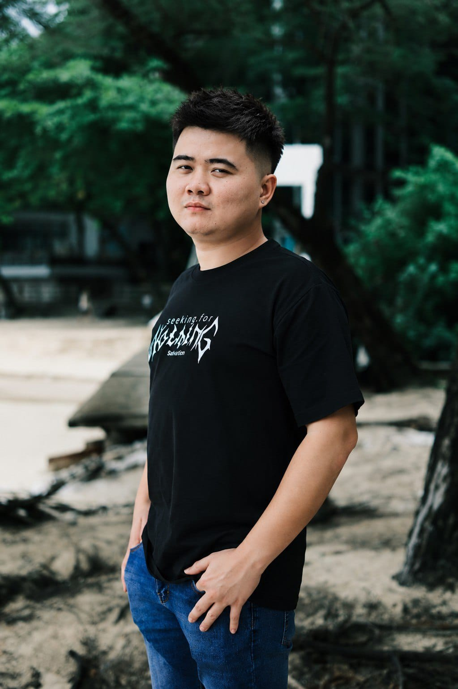

01 — IDE
Eksplorasi kreatif
Mencari sudut pandang baru dan mengubah inspirasi menjadi konsep yang menarik.
Halo, saya Teddy. Saya tertarik pada kreativitas, dunia digital, dan cara mengubah ide sederhana menjadi sesuatu yang bermanfaat.

Saya percaya hal besar bisa dimulai dari langkah kecil, rasa ingin tahu, dan keberanian untuk mencoba.
Website ini adalah tempat untuk memperkenalkan diri, membagikan proses kreatif, dan mengumpulkan karya yang sedang saya kembangkan. Saya sedang membangun kemampuan di dunia digital, satu proyek pada satu waktu.
Bagian ini bisa kamu ubah dengan cerita pribadi, pengalaman, pencapaian, atau hal yang ingin orang lain kenal tentang dirimu.
Tiga bidang yang bisa menjadi identitas dan arah perjalanan kreatifmu.
Mencari sudut pandang baru dan mengubah inspirasi menjadi konsep yang menarik.
Mencoba format, alat, dan platform digital untuk membuat sesuatu yang berguna.
Mengembangkan kemampuan lewat eksperimen, evaluasi, dan langkah kecil setiap hari.
Gunakan ruang ini untuk menampilkan proyek, konten, pencapaian, atau eksperimen terbaikmu.
Tambahkan tautan ke video TikTok, Reels, atau konten yang paling kamu banggakan.
Tampilkan desain, foto, ide visual, atau proyek digital yang pernah kamu buat.
Ceritakan proses, pelajaran, dan perkembangan yang ingin kamu bagikan.
Catatan: kartu di atas masih contoh. Ganti dengan karya dan tautan milikmu sebelum dipublikasikan.
Terbuka untuk bertukar ide, berkolaborasi, atau sekadar menyapa. Tambahkan email dan akun sosialmu di sini.